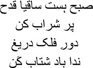

8
 hadn’t been to Tabassum’s house for a fortnight. This happens with me all the time. I start something and then lose interest abruptly. My wife Atasi says I lack the willpower to stick to a task. Perhaps. But what is willpower? Is it the determination necessary to complete a task? But does this determination come to any use eventually? When I think of it, I am only reminded of the crematorium after the war in the Mahabharata, strewn with corpses and pyres and vultures. A tale from the Anushasana Parva keeps coming back to me. It’s a circular orbit. Opening Rajshekhar Basu’s Mahabharata, I read the story again.
hadn’t been to Tabassum’s house for a fortnight. This happens with me all the time. I start something and then lose interest abruptly. My wife Atasi says I lack the willpower to stick to a task. Perhaps. But what is willpower? Is it the determination necessary to complete a task? But does this determination come to any use eventually? When I think of it, I am only reminded of the crematorium after the war in the Mahabharata, strewn with corpses and pyres and vultures. A tale from the Anushasana Parva keeps coming back to me. It’s a circular orbit. Opening Rajshekhar Basu’s Mahabharata, I read the story again.
Yudhishthira said, Pitamaha, you have given us much counsel about peace, but my heart will not be calmed after committing the sin of shedding my brothers’ blood. I am dispirited at observing you impaled and bloodied by arrows. What shall be the outcome of the heinous acts that we have committed? I consider Duryodhan fortunate for not having to be witness to this plight of ours. The Almighty must have created us so for the express purpose of perpetrating transgressions. If you desire our well-being, advise us on how we may be freed of sin in the afterlife. Bhishma replied: the human soul is under the jurisdiction of God, why do you consider it responsible for your acts, be they good or bad? The acts we perform have causes too subtle for our senses to capture. Let me tell you a story from ancient history.
There was an old Brahmin woman named Gautami whose son was slain by a snakebite. An enraged hunter named Arjunak trapped the snake and brought him to Gautami, saying, this, the basest among serpents, is the slayer of your son, tell me how I should kill him; should I cast him into flames, or slice him into pieces? Gautami replied, you are foolish, Arjunak, do not kill this snake, release him. His death will not resurrect my son, nor will releasing him do you harm. Why should anyone risk eternal damnation in hell by killing this living creature?
The hunter retorted, your advice is appropriate for one in his senses, but the grief stricken will not be consoled. Proponents of peace suppress their anguish by attributing such acts to the will of Time, but those who favour vengeance are relieved of their grief only by annihilating the enemy, while the rest merely continue with lamentations resulting from their attachment to the departed. Therefore, you can free yourself of grief, too, by slaying this serpent. Gautami answered, those who adhere to their dharma like me do not experience grief; this boy has died because such was his destiny, I cannot slay the snake because of this. Fury does not become the Brahmin, it only causes agony. Forgive this serpent and release him. The hunter averred, slaying it will save many lives, wrongdoers should be exterminated.
Despite the hunter’s repeated requests, Gautami did not acquiesce to slaying the serpent. Then the snake said softly to the hunter, using the human tongue, how is it my fault, foolish Arjunak? I am not independent. I did not bite this boy of my own free will, I did it at the bidding of Death. If anyone has sinned, it is Death himself. The hunter replied, even if you are subservient to another, you are responsible for this transgression, and hence fit for slaying. The snake responded, I alone am not responsible, several reasons have converged to cause this. The hunter avowed, yours is the primary responsibility for this boy’s death, and hence you are fit for slaying.
While the snake and the hunter were engaged in argument, Death himself appeared, saying, I despatched you at the bidding of Time, snake; therefore neither of us is responsible for this boy’s demise. Everything in this universe, movable and immovable, the sun and the moon and the Gods and the water and the air, are under the jurisdiction of Time. Therefore you cannot blame me. The snake replied, I have neither blamed nor exonerated you, all I have stated is that I sank my fangs into the boy under your orders; it is not my task to assign blame. You have heard what Death said, now release me, hunter. The hunter responded, it has not been proved that you are innocent; both you and Death are responsible for this boy’s demise, shame on both of you.
Now Time himself appeared and told the hunter, neither I nor Death nor the snake is to blame, this child’s own karma is responsible for his mortality. Just as the potter fashions objects from clay according to his own desires, so too is man subject to the outcome of his own acts. This child is himself responsible for his demise.
Gautami said, neither Time nor the serpent nor Death is responsible for the boy’s death. He has died because of his own karma. I too have lost my son because of my own karma. Therefore, Time and Death may leave now, while you release the snake. Time and Death left upon hearing this, and the hunter released the snake. Gautami was drained of grief.
Finishing his story, Bhishma said, those who were slain in war all faced the consequences of their karma under the influence of Time. They did not have to die because of your act or Duryodhana’s. Therefore you may forsake your grief.
I know today that all our acts flow in ways dictated by destiny—a snake that keeps eating its own tail. There’s no end to its self-consumption, to its attempt to neutralize itself. I am only following the orders of an unseen entity. Even if there is something that can be termed willpower, what use does it come to? We simply drift from one story to another like a fallen leaf.
Meanwhile, Tabassum telephoned. —What’s the matter, janab? Even your fragrance is missing.
— Er … Unable to respond, I smiled.
— Is Manto’s novel simply going to languish?
— Why?
— You don’t seem remotely inclined to continue with the translation.
— Oh no … we have to resume it.
— What’s wrong with you?
— Nothing.
Tabassum’s laughter cascaded down on me.
— You and your ‘nothing’. What is this ‘nothing’ that takes hold of you? Tell me what this ‘nothing’ is.
— Sitting with a blank page.
— Meaning? I could see Tabassum’s eyes dancing. The lavish lines of kohl beneath her eyes were dancing too.
— You sit with a blank page, endlessly. And then at some point words and images appear on it.
— When will these words appear?
— Have you read Basho’s poetry?
— Who’s Basho?
— A Japanese writer of haikus from the seventeenth century. Basho wrote, like wild geese we will disappear amidst the clouds.
— I cannot keep pace with you, janab. I can see this translation will not be completed.
— Why?
— You’re sitting with a blank sheet of paper now. Who can tell when the words will appear, when the images will become visible?
— Will you recite that ghazal of Ghalib’s for me?
— Which one?
— You know the one: hoon garmi-e-nishat-e …
— Hoon garmi-e-nishat-e-tasavvur se naghma sanj, main andallab-e-gulshan-e-na-afrid hoon. So when will the nightingale drunk on music create its garden?
— Whenever she summons him.
— Who will summon him?
— The spring breeze has arrived in winter this year.
Tabassum laughed. —What is it janab? Are you in love?
— Aa nikalta hai kabhi hansta, to hai bagh-e-bahar, uski aamad mein hai saare faslein aane ki tarah.
— Oh my God! So you’re deep into Mir?
— When it comes to Urdu ghazals, don’t you think Mir is the most sensual? Ghalib glows with brilliance, while a bleeding Mir hands you his heart. Ghalib conceals himself somewhere, he is drawn more by the beauty behind the veil.
— You’re right. But you can learn the art of concealment only from Ghalib. You can place your hand on Mir’s breast, you can plunge a knife in too. Ghalib is a mirror in the distance. It only accepts your reflection and remains aloof, alone. How strange this mirror is. Man can leave his mark on anything, but when it comes to a mirror, your reflection exists only as long as you do. After that, you’re gone. Ghalib is a mirror. The moment you go away, you’re nowhere in it.
— I didn’t think of this, Tabassum.
— Didn’t think of what? A bird flew away in her voice.
— I never thought of Ghalib the way you do.
— Naturally. You have your own way of thinking.
— No, Tabassum. I do not believe in this sort of individuality anymore. Why will we not think along the lines of the ideas in Sufi tales or Zen koans or Eskimo legends? Why will we not think like Vyasa? Why will we not think like Mirabai? Yajnabalka said, ‘There is no individual consciousness when you have transcended everything.’
— What’s the matter with you? Tabassum’s question glided over my head like a calm breeze. Breezes like these blew over the heads of cypress trees in miniature paintings once upon a time.
— Why do you ask?
— Are you disturbed about something?
— No. Many persons old and new are surrounding me every day, Tabassum. I want to listen to what they have to say, but I have far too little time.
— Meaning?
— Never mind. We’ll resume our work tomorrow.
— Don’t evade the issue, please. You have far too little time—what does this mean?
— Then let me read you a poem.
— Whose poem?
— That same ancient sailor’s. Listen …
I saw—in the twilight of my benumbed senses
My body drifting along the currents of the black river,
Bearing its swarm of sensations, its eccentric agonies,
The memories gathered from birth in its patterned shroud,
Carrying its flute. As it floated further and further still
Its form turned indistinct, everywhere on the familiar shores
Amidst the houses held in the embrace of shade-giving trees,
The evening prayers grew fainter, doors were barred for
the night
Lamps were put out, the ferry-boats moored to the banks.
The river crossings finally came to an end, night gathered,
Muted birdsong on the forest branches lay down its offering,
Its self-sacrifice, at the feet of the great silence.
A dark exquisite beauty descended over the diverse world
In water, on land. The body became a shadow, a drop, vanished
In the infinite black. I visited the foot of the altar of stars,
Stood by myself, looked upwards, joined my palms,
and spoke—
You have retracted your web of light, o sun,
Reveal now your most benevolent form,
Show me the man who is common to both of us.
— Are you exhausted?
— No, I am very happy, Tabassum. This is the joy of losing myself. I am losing myself in the ruins of buildings as I translate this novel. I am becoming one with shards from broken bangles, tattered scraps of muslin, pages torn out of notebooks, vials of dried perfume. It is to lose oneself this way that we write.
In that mirror we sat—Tabassum and I—with Manto’s manuscript before us. This manuscript had put us in deep difficulties. In it, Ghalib’s and Falak Ara’s story was in the sixth chapter. Manto had not written the seventh chapter. He had only jotted down a few points, adding, ‘This can be written later. I feel no interest in writing this chapter now.’ It really was hard to understand Manto. He seemed to be writing not for the reader but for himself. After this he had jumped directly to the eighth chapter, where Mirza Ghalib arrives in Delhi. But he never did get around to writing the seventh. What were we to do?
— Why do you think he didn’t write the seventh chapter? asked Tabassum, hunched over the manuscript.
— Maybe he was in no condition to write. He may have had too much whisky. But what were the points about?
— About Mirza’s marriage.
— Will you read them, please?
— He wrote: Mirza was married to Nawab Illahi Buksh Khan’s daughter Umrao Begum in 1810. Ghalib was thirteen, and Umrao, eleven. Illahi Buksh was the brother of Ahmed Buksh Khan, the nawab of Jhirka and Loharu.
— After that?
— Illahi Buksh wrote ghazals too. His pseudonym, takhallus, was Mahroof. He was one of the aristocrats of Delhi.
— And then?
— Mirza could not bring himself to accept this marriage. It meant being imprisoned once again in a rich man’s house. Manacles were put around my legs again, he wrote himself. Balls and chains. Manto sahib wrote, it makes no sense to write an entire chapter about this wedding business. But he could actually have done a wonderful chapter on it. An aristocratic Muslim wedding. Elephants, horses, palanquins, illuminated squares, singing and dancing, food and drinks. Why didn’t Manto sahib write anything about all this?
— Did he write anything else?
— No … wait a minute, he did write a story.
— A story?
— About his father-in-law Mahroof.
— Let’s hear it.
— It’s an interesting story. One day, Mahroof sahib asked Mirza to make a copy of his family tree. Mirza made a copy all right, but he put the third generation after the first, and then the fifth—and so on. He skipped the second, fourth, sixth, etc. generations completely. Mahroof sahib was livid when he saw this. What have you done Mirza? Mirza answered calmly, ‘A family tree is nothing but a ladder. A ladder you have to climb to reach Allah. Where’s the harm in skipping a rung or two? Climbing will be a little harder, that’s all.’
— And then?
— An enraged Mahroof sahib tore up the copy of the family tree. Mirza was still chuckling.
— Didn’t Manto sahib write anything else?
— No.
— Madness. He could easily have written this chapter.
— Why?
— A wedding with the nawab’s daughter. Just think of the scope. Bengali novelists would have swooped down on the opportunity. A description of Umrao Begum’s beauty over four pages. Ten pages about the wedding. True-to-life descriptions with details culled from history. Can you imagine? Perfect fast-food for readers. And this is what Manto sahib chose to skip. He could have included love at first sight—long lines of dialogue with which to …
— You really believe all this?
— Believe what?
— Such descriptions.
— Tabassum …
She looked at me. In her glance I saw the image of a thousand cranes in flight. Turning away from her, I looked at her reflection in the mirror.
— Why are novels written, Tabassum?
— Why?
— To listen to voices in the darkness. Many voices.
— Whose voices?
— People we don’t know.
— Which means the novelist does not know his characters?
— No.
— Why did Manto sahib write about Mirza, then?
— Because he didn’t know Mirza.
— Will he know him when the novel is completed?
— No.
— Where will Manto sahib’s novel end up, then?
— Nowhere.
— And what about Mirza?
— He won’t be there either. Only a shadow will.
— Whose?
— Many people’s. Those who no longer exist. This is why I cannot write novels anymore, Tabassum. I can bear many burdens, but I cannot carry a shadow that stays behind. Let’s start from the next chapter.
— Not today. Let’s go out for some coffee.
I observe Tabassum in the mirror. She rises to her feet with the rhythm of a dancer, her arms outspread like wings. —You do like coffee, don’t you?
— Mmm …
— I’m going to buy you a special coffee today.
— Is it right to abandon Mirza for coffee? Wouldn’t a drink be a better way to show respect for him? I smiled.
— That’s not going to happen in my company, janab.
I had never been to such a coffee shop. It was like a mushaira newly sprung up in the city. But here Hafiz sahib would not have been able to say,

Look, Saki, the night is ending
Fill my cup with wine
They’re racing upwards there
Be quick, time is flying
Here you could sit, or lie back against cushions. The strains of Joan Baez or Kailash Kher wafted gently over the coffee shop; at intervals the Bengali song Ferari Mon—The Escaped Heart—was played. The coffee that Tabassum ordered was named Black Coffee with honey. A brown liquid was served in a tall glass. The first small sip seemed to set free a young bird inside my mouth, with the fragrance of caramel in its wings.
— Like it? Tabassum asked with a movement of her eyes.
— Yeh na thi hamari kismat ke wisal-e-yaar hota, agar aur jeete rahte yehi intezaar hota. It was not in my destiny to meet you. Had I lived longer, I would have waited longer.
— Wow! Is that what it tastes like?
— Have you noticed, Tabassum …
— What?
— The more the coffee dwindles, the more the ocean of nectar swells.
— Really?
— Hmm.
— Would Mirza have liked this coffee?
— Perhaps Ghalib mian would have written … Ghalib chhuti sharaab par ab bhi kabhi kabhi peeta hoon roz-e-abr-o-shab-e-mehtaab mein. Ghalib still drinks as an exception, on cloudy days and moonlit nights. But why did you bring this taste of nectar to me today Tabassum?
Tabassum was silent for a long time. Then she said, ‘We really shall enter dozakh tomorrow, janab.’
— Is that so?
— Ghalib is coming to Dilli in the next chapter. It is a macabre episode. How did Manto sahib even write it? In Dilli, Mirza spoke to the dead for the first time. The dead showed him the way. I wept as I read. Manto sahib is so cruel.
I toyed with the taste of caramel in my mouth.